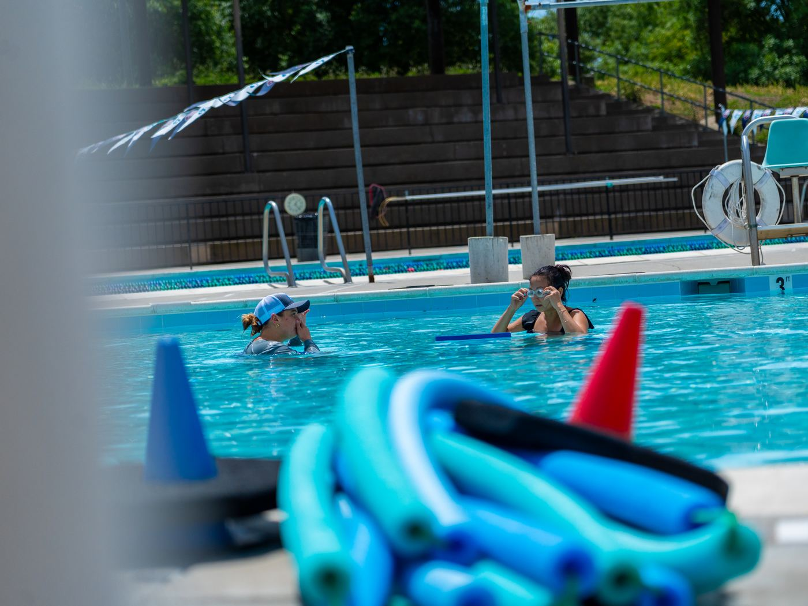

Our Purpose
SWAG (Swim AGS) is dedicated to promoting water safety and wellness among UC Davis students, staff, and professors. Through our free lessons, we cultivate community engagement and meaningful relationships.
Safety
We aim to teach essential water safety skills that ensure safety in and around water, fostering a culture of confidence and wellness.
Community
We strive to create lasting relationships between student-athletes and the UC Davis community, uniting people through the love of swimming.
Engagement
By participating in our programs, individuals not only learn how to swim but also engage in community-driven events and activities.
Wellness
Our lessons contribute to physical fitness and mental well-being, utilizing water activities to promote overall health.

In practice
Every SWAG session is led by current UC Davis Division 1 water polo athletes who volunteer their time, so participants get patient, personal coaching in a low-pressure setting.
See how clinics workFree clinics at the Davis Community Pool, taught by Division 1 water polo athletes.